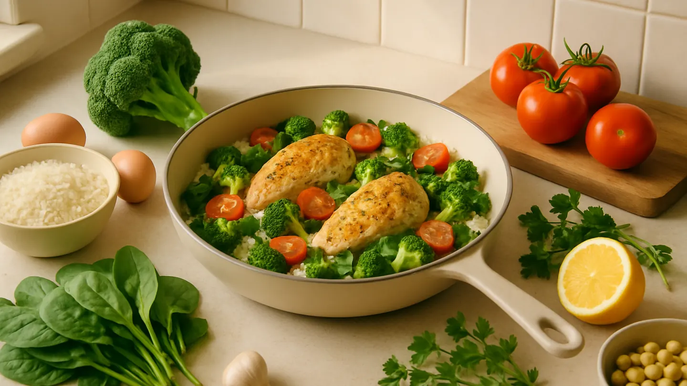

Chicken + broccoli + rice
Stir-fry or rice bowl with garlic, soy or lemon, and a little chili if you like heat.
Recipe ideas

Got ingredients but no dinner plan? Delixio is a recipe generator that starts with what you already have. Add the food you want to use, choose your cooking time, servings, and meal type, then get practical recipe ideas for tonight.
Want to use only what is already at home? Choose Strict. Happy to pick up one or two extras? Choose Flexible. You can explore recipe ideas for free, then unlock a full recipe when you are ready to cook.
Most “what should I cook?” decisions fail because people start with a recipe that needs a shopping trip. Flip the process:
Here are realistic combinations and the meals they often become:
Stir-fry or rice bowl with garlic, soy or lemon, and a little chili if you like heat.
Quick scramble wraps or a simple skillet breakfast-for-dinner.
Pantry pasta with optional leftover vegetables stirred through at the end.
Cold salad bowl or warm skillet chickpeas with a yogurt dressing.
Strict means cook with only your ingredients. Flexible allows about 1–2 missing items. Creative explores more inventive ideas with smart extras when you need them.
In Delixio these are cooking modes, so you can choose the trade-off before you generate ideas. Learn more in the cooking modes FAQ.
Delixio is an AI recipe app for iPhone and Android. You type ingredients you already have, choose preferences (cooking time bands, servings, meal type), pick Strict, Flexible, or Creative mode, and generate personalized meal ideas, ideas are free.
When you unlock a full recipe, it costs 1 credit. You get 1 free full recipe every day, and optional packs of 6, 28, or 90 credits. No subscription. From there you can review missing ingredients, save recipes to lists, build a grocery list, and plan meals.
Delixio is currently available for iPhone and Android. Type the ingredients you already have, explore free recipe ideas, then unlock a full recipe when you want to cook. You get 1 free full recipe every day, plus optional credit packs. No subscription.
It is a tool or method that starts from foods you already have and suggests meals that use them, instead of starting from a recipe that forces a shopping list.
No. For home cooking it is usually enough to list the main ingredients you want to use. Exact quantities can be adjusted when you cook.
Yes. Enter the ingredients you want to use, choose preferences and a cooking mode, generate free recipe ideas, then unlock a full recipe with 1 credit when you want the complete version.
Yes. Recipe ideas are free to generate, and you get 1 free full recipe every day. New users also start with 2 credits. Extra packs (6, 28, or 90) are optional, no subscription.